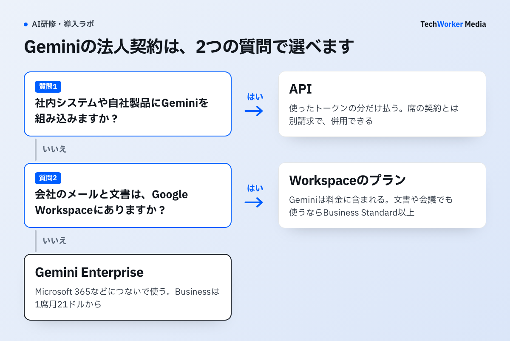
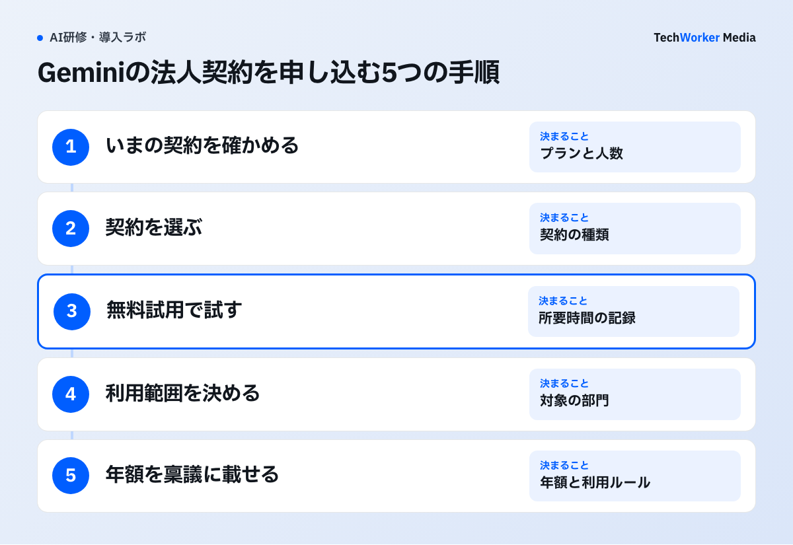

Geminiの法人契約はGoogle Workspace・Gemini Enterprise・APIの3つです。会社のメールと文書がどこにあるかと、Geminiを何に使うかで選びます。
- Google Workspaceを使っている、またはこれから入れる：Workspaceのプランです。Geminiは料金に含まれ、Business Starterは1人月800円、Standardは月1,600円です（年間プラン・税別）。
- Microsoft 365など、Workspace以外の業務アプリにつないで使う：Gemini Enterpriseです。Businessエディションは1席月21ドルからです。StandardとPlusの金額は公式ページに掲載がなく、営業窓口で見積もります。
- 自社のシステムや製品に組み込む：APIです。使ったトークンの分だけ払います。Gemini 4 Argonの単価は2026年12月1日に上がります。

WorkspaceとGemini Enterpriseでは、入力したデータはモデルの学習に使われません。APIは無料枠と有料枠で扱いが分かれます。この記事ではGoogleの公式ページを2026年11月11日に確認し、料金表、プランごとの違い、選び方、申込みの手順、稟議で聞かれることをまとめます。
GeminiはGoogle Workspaceの料金に含まれていますか？
含まれています。Workspaceを契約している会社は、追加のライセンスを買わずにGeminiアプリを使えます。
原文（日本語）「Gemini アプリは、Google Workspace の商用および公共機関のお客様には追加料金なしで提供され、エンタープライズ グレードのセキュリティとコンプライアンス管理機能が含まれています。」
引用はGeminiアプリとGemini Enterpriseの違いを説明する回答の一部です。同じ回答はGeminiアプリを日常的に使うAIアシスタントと説明しています。Gemini Enterpriseについては、Workspace以外の企業データにもつなぎ、複数のエージェントを使うチーム向けだと説明しています。
この引用で分かるのは、Geminiアプリに追加料金がかからないことまでです。どのプランで、どのアプリの中のGeminiが使えるかは、Workspaceの料金ページの比較表で確かめます。次の節で、その表をもとに整理します。
Geminiの法人契約の料金はいくらですか？
Workspaceは1人月800円から、Gemini Enterpriseは1席月21ドルから、APIはトークン単価の従量課金です。
| 契約 | 料金 | 申込みと人数 | 向いている組織 |
|---|---|---|---|
| Google Workspace Business Starter | 1人月800円（年間プラン） 年間プランにしない場合は950円 | Webから申込み。300ユーザーまで。14日間の無料試用あり | GeminiアプリとGmailで足りる会社 |
| Google Workspace Business Standard | 1人月1,600円（年間プラン） 年間プランにしない場合は1,900円 | Starterと同じ | 文書・表計算・会議でもGeminiを使う会社 |
| Google Workspace Business Plus | 1人月2,500円（年間プラン） 年間プランにしない場合は3,000円 | Starterと同じ | データの保持や電子情報開示（Vault）が要る会社 |
| Google Workspace Enterprise | 問い合わせ（公式ページに金額の掲載なし） | 営業窓口に問い合わせ。ユーザー数の上限・下限なし | 300人を超える会社、DLPやデータの保存地域の指定が要る会社 |
| Gemini Enterprise Business | 1席月21ドルから | Webから申込み。30日間の無料試用あり。ITのセットアップは不要 | Workspace以外の業務アプリにつないで使う小規模な会社・チーム |
| Gemini Enterprise Standard／Plus | 営業窓口で見積もり（公式ページに金額の掲載なし） | Google Cloudコンソールか営業経由。1ユーザーから。月単位か年間のサブスクリプション | 統制とコンプライアンスの要件が強い組織 |
| API （Gemini API／Agent Platform） | モデル別のトークン単価 例：Gemini 4 Argonは100万トークン当たり入力2ドル、出力10ドル（11月30日まで） | Google AI StudioかGoogle Cloudで契約。席の契約とは別請求 | 社内システムや自社製品に組み込む組織 |
出典：Google Workspace 料金ページ、Google Cloud「Gemini Enterprise」各ページ、Gemini APIとAgent Platformの料金ページ（2026年11月11日確認）。Workspaceの額は税別で、日本から開いたときの表示です。
Workspaceの年額は「1人の月額×人数×12カ月」で出せます。Business Standardを50人が年間プランで使うと、1,600円×50人×12カ月で96万円です（税別）。年間プランにしない場合は1,900円×50人×12カ月で114万円になり、差は年18万円です。料金ページにはすべてのプランの請求は月単位で行われると書かれています。
料金ページには新規契約の最初の3か月間を50%オフにする特典も出ています。対象は新規の顧客で、ユーザー数などの条件があります。期間限定の特典なので、稟議の年額は通常の料金で組みます。
Gemini EnterpriseはWorkspaceのプラン名（Enterprise）とは別の製品です。名前が似ているため、見積もりを頼むときは「Google WorkspaceのEnterpriseエディション」か「Gemini Enterprise」かを書き分けます。
4社の料金比較表と稟議書の雛形は、下の枠から受け取れます。
Workspaceのプランによって、使えるGeminiはどう違いますか？
Starterで使えるのはGeminiアプリとGmailの中のGeminiまでです。ドキュメントやMeetの中でも使うなら、Standard以上が必要です。
| 項目 | Starter | Standard | Plus | Enterprise |
|---|---|---|---|---|
| Geminiアプリ（Web・モバイルでのチャット） | ○ | ○ | ○ | ○ |
| Gmailの中のGemini | ○ | ○ | ○ | ○ |
| ドキュメント・スプレッドシート・スライドの中のGemini | × | ○ | ○ | ○ |
| ドライブ・Meet・Chatの中のGemini | × | ○ | ○ | ○ |
| 複雑なタスク向けの最も高性能なAIモデル | × | ○ | ○ | ○ |
| Gemini Notebook | 基本的なアクセス | より広いアクセス | より広いアクセス | より広いアクセス |
| Gemini Notebookの音声解説 | 1日3件まで | 1日20件まで | 1日20件まで | 1日20件まで |
| Google Vids・Workspace Studio | ○ | ○ | ○ | ○ |
| ユーザー数 | 300人まで | 300人まで | 300人まで | 上限・下限なし |
出典：Google Workspace 料金ページの機能比較表（2026年11月11日確認）。
StarterとStandardの差額は年間プランで1人月800円です。会議の要約や資料の下書きにGeminiを使う予定があれば、Standardが基本線になります。Starterのままでは、Geminiを使える場面がチャットとメールに限られます。
PlusとEnterpriseで増えるのは主にセキュリティと管理の機能です。PlusにはVault（データの保持・アーカイブ・検索）と高度なエンドポイント管理が加わります。EnterpriseにはDLP（データ損失防止）、コンテキストアウェアアクセス、データの保存地域を指定するEnterprise Data Regionsが加わります。
画像や動画の生成、Workspace Studioの自動化などを多く使う人向けに、上限を引き上げる「AI Expanded Access」という別売りのアドオンもあります。料金は地域と契約期間で変わると案内されているので、管理コンソールの購入画面で確かめます。
プランを決めたあとの管理コンソールの設定と、部門ごとに利用範囲を広げる進め方はGeminiの法人導入で説明しています。
Gemini Enterpriseとは何で、料金はどう決まりますか？
Gemini Enterpriseは社内の複数の業務アプリにつないで検索やエージェントの実行を行う別製品です。料金は席単位のサブスクリプションで、エディションごとに決まります。
公式ドキュメントの比較表には、5つのエディションが載っています。
| エディション | 料金 | ユーザー数 | 特徴 |
|---|---|---|---|
| Business | 1席月21ドルから | 1〜500ユーザー | Webから使うSaaS。Google Cloudコンソールは不要。ストレージは1人25GiB（プール） |
| Standard | 営業窓口で見積もり | 1ユーザー以上 | Google Cloudコンソールで管理する。アシスタントへの質問は1ライセンス1日160件。ストレージは1人30GiB |
| Plus | 営業窓口で見積もり | 1ユーザー以上 | アシスタントへの質問は1ライセンス1日200件。ストレージは1人75GiB |
| Frontline | 営業窓口で見積もり | StandardかPlusのユーザーが150人以上いる組織 | 現場スタッフ向け。StandardかPlusに追加して買う |
| 従量課金制 | 席の料金なし。使った分を支払う | 1シートから | 機能ごとの割り当ての上限がない。ストレージは1GiB当たり月5ドル |
出典：Google Cloud ドキュメント「Gemini Enterprise のエディション比較」「割り当てと従量課金制の使用」、Gemini Enterprise Businessエディションの製品ページ（2026年11月11日確認）。
Businessエディションの人数は製品ページでは「最大300名までのチームに最適」と案内されています。ドキュメントの比較表では1〜500ユーザーです。300人を超えて使う予定なら、申込みの前に上限を確かめます。
StandardとPlusの割り当ては同じエディションのユーザーで共有するプールです。Standardのライセンスが100あれば、1日1万6,000件の質問を全員で分け合います。プールを使い切ったあとも止めずに使うには、割り当てを超えた分を従量課金で払う設定を有効にします。この設定にはプロジェクトごとに月の費用の上限を置けます。
StandardとPlusのドキュメントには、Google Cloudの統制機能への対応が挙げられています。VPC Service Controls、顧客管理の暗号鍵（CMEK）、監査ログ、データ所在地の指定です。ドキュメントに載っているデータ所在地は、us・eu・globalの3つです。
サブスクリプションは月単位か年間で、自動更新を設定できます。解約するには自動更新をオフにします。オフにしても、契約期間が終わるまではサブスクリプションが有効です。
Gemini APIとVertex AIは法人契約としてどう違いますか？
どちらもトークン単価の従量課金です。Gemini APIは開発者がすぐ使える入口で、Google Cloud側のAgent Platform（旧Vertex AIの後継）は企業向けの統制と割引が加わります。
Gemini APIの料金ページには、Free・Paid・Enterpriseの3つの段階が載っています。EnterpriseはGemini Enterprise Agent Platformで提供される段階です。Googleの公式FAQはAgent Platformを「Vertex AIの進化版」と説明しています。以前のVertex AIの料金ページを開くと、いまは「Agent Platformの料金」に移ります。
主なモデルの標準の単価は次のとおりです。単位は米ドルで、100万トークン当たりです。
- Gemini 4 Argonは2026年11月30日まで入力2ドル、出力10ドルです。12月1日からは入力4ドル、出力20ドルになります。
- Gemini 3.8 Flashは2026年12月31日まで入力0.75ドル、出力3.75ドルです。2027年1月1日からは入力1.50ドル、出力7.50ドルになります。
この単価はGemini APIの有料枠と、Agent Platformのグローバルエンドポイントで同じでした。Agent Platformでグローバル以外のエンドポイントを使うと、Gemini 4 Argonは入力2.20ドル、出力11ドルです（11月30日まで）。Gemini APIの有料枠では、Batch APIを使うと費用が50%下がります。
法人で気をつけるのはデータの扱いです。Gemini APIの無料枠では入力した内容がGoogleの製品の改善に使われます。有料枠では使われません。社内のデータを扱う検証は、有料枠かAgent Platformで行います。Gemini 4 Argonは無料枠では使えません。
Gemini 4 ArgonをAPIで試すときの地域と利用条件はGemini 4 Argonの法人試用で確認できます。
どの会社・人数ならどの契約を選びますか？
すでにGoogle Workspaceを使っている会社は、いまのプランを確かめるところから始めます。Business Standard以上なら、新しい契約をしなくてもGeminiを使えます。
- WorkspaceのBusiness Standard以上を使っている会社：追加の契約は要りません。足りないのは契約ではなく、利用範囲の設定と使い方の定着です。
- WorkspaceのBusiness Starterを使っている会社：ドキュメントやMeetでもGeminiを使うなら、Standardに上げます。チャットとメールで足りる部門は、Starterのままで構いません。
- 300人を超える会社、DLPやデータの保存地域の指定が規程で必須の会社：WorkspaceのEnterpriseです。営業窓口で見積もります。
- Microsoft 365を全社で使っている会社：Workspaceに乗り換えるかどうかは、Geminiだけでは決まりません。GeminiとCopilotの比較で、既存の基盤に合わせた選び方を確かめてください。いまの基盤のままGeminiを使うなら、Gemini Enterpriseです。Microsoft 365やSlackなどにつないで使えます。
- 複数の業務システムをまたいで検索やエージェントを使いたい会社：Gemini Enterpriseです。小さく始めるならBusiness、CMEKやデータ所在地の指定が要るならStandardかPlusです。Workspaceを使っている会社でも、追加で契約する対象になります。
- 社内システムや自社製品に組み込む会社：APIです。試作はGemini APIの有料枠で始められます。本番で専用のサポートや利用量に応じた割引が要るなら、Agent Platformを検討します。
Geminiに決める前に、ChatGPTやClaude、Copilotと並べて比べたい場合は、生成AIの法人契約の比較を先に読んでください。Claudeの席料金と従量課金の組み方はClaudeの法人契約と料金で説明しています。
申込みはどんな手順で進めますか？
いまの契約の確認、契約の選定、無料試用、利用範囲の設定、稟議の5つの手順で進めます。

- いまの契約を確かめます。Google Workspaceを使っているか、使っているならどのプランで何人かを、管理コンソールで確かめます。Microsoft 365など、ほかの基盤の契約も書き出します。
- 契約を選びます。前の節の分け方で、Workspaceのプラン、Gemini Enterprise、APIのどれにするかを決めます。併用もできます。
- 無料試用で試します。Workspaceは14日間、Gemini EnterpriseのBusiness・Standard・Plusは30日間、無料で試せます。対象の業務を1つか2つに絞り、試用の前後で所要時間を記録します。
- 利用範囲を決めます。WorkspaceのGeminiアプリは管理コンソールから一元的に管理できます。全社で一度に有効にせず、試用した部門から広げます。
- 年額を稟議に載せます。Workspaceは「1人の月額×人数×12カ月」です。ドル建てのGemini EnterpriseとAPIは、換算レートとその日付を添えます。
Gemini EnterpriseのStandardとPlusはGoogle Cloudコンソールから買う方法と、営業担当者を通す方法があります。コンソールから買える席数には上限があり、上限は請求先アカウントによって変わります。それを超える席数は営業担当者に相談します。
稟議では何を聞かれますか？
聞かれるのは年額、データの扱い、既存契約との重なり、やめるときの条件の4つです。
- 年額はいくらですか。Workspaceは円建てで、人数を掛ければ出ます。Gemini EnterpriseのStandardとPlusは見積もりが出るまで金額が決まらないため、稟議の前に営業窓口へ問い合わせます。
- 入力した情報は学習に使われますか。Workspaceの料金ページには、企業のデータがモデルのトレーニングに使われることはないと書かれています。Gemini Enterpriseも同じで、プロンプトと出力は学習に使われません。APIは有料枠を使います。
- いまの契約と重なりませんか。WorkspaceのStandard以上を契約していれば、Geminiアプリには追加料金がかかりません。その上にGemini Enterpriseを足す場合は、Workspaceの中だけでは足りない理由を書きます。たとえば、つなぎたい業務システムの名前です。
- やめるときはどうなりますか。Workspaceの年間プランは1年契約です。Gemini Enterpriseは自動更新をオフにしても契約期間の終わりまで有効です。途中で人数を減らせるかは、契約の前に確かめます。
稟議に入れる項目
□ 目的と対象（部署・人数・期間）
□ 契約を選んだ根拠（Workspaceのプラン・Gemini Enterprise・APIの比較）
□ 年額（通常の料金で計算。ドル建ては換算レートと日付）
□ データの扱い（学習への利用、保存地域、管理者の設定）
□ 既存契約との関係（Microsoft 365など、重なる契約の有無）
□ 定着の計画（研修、相談先、広げる順番）
□ 見直しの条件（利用が基準に届かないときの縮小・解約）
よくある失敗にはどんなものがありますか？
多いのはStarterのまま全社に広げること、個人のアカウントで業務に使うこと、似た名前の製品を取り違えることの3つです。
- Starterのまま全社に広げてしまう。研修でドキュメントやMeetの中のGeminiを教えても、Starterの人は使えません。部門ごとのプランを先に確かめます。
- 個人のGoogleアカウントで業務に使ってしまう。個人向けのGeminiはアカウントの設定によっては、やり取りがGoogleの製品やモデルの改善に使われることがあります。業務では会社のアカウントで使います。
- WorkspaceのEnterpriseとGemini Enterpriseを取り違える。前者はWorkspaceの最上位のプラン、後者はGoogle Cloudの別製品です。見積もりの依頼先も契約も別です。
- APIの無料枠で社内のデータを試してしまう。無料枠の入力は製品の改善に使われます。社内のデータは有料枠で扱います。
- 12月の単価の改定を入れずに、APIの予算を組む。Gemini 4 Argonは12月1日から入力も出力も2倍になります。11月の実測値をそのまま年額にすると、予算が足りなくなります。
- 割引後の額で稟議を書いてしまう。新規契約の割引は期間限定です。通常の料金で年額を出し、割引は差額として別に書きます。
よくある質問
かかりません。GeminiアプリはWorkspaceの料金に含まれています。ただし、Business Starterで使えるのはGeminiアプリとGmailの中のGeminiまでです。利用の上限を引き上げるAI Expanded Accessは、別売りのアドオンです。
WorkspaceのBusiness Starter・Standard・Plusは300ユーザーまでです。WorkspaceのEnterpriseには、ユーザー数の上限も下限もありません。Gemini EnterpriseのBusinessエディションは公式ドキュメントの比較表で1〜500ユーザーです。
Businessエディションは1席月21ドルからです。Standard・Plus・Frontlineの金額は公式ページに載っておらず、Google Cloudの営業窓口で見積もります（2026年11月11日確認）。
Google WorkspaceとGemini Enterpriseでは、企業のデータはモデルの学習に使われません。Gemini APIは、無料枠では入力した内容が製品の改善に使われ、有料枠では使われません。
できます。Gemini EnterpriseはMicrosoft 365やSlackなどの業務アプリにつないで使えます。BusinessエディションはITのセットアップなしでWebから申し込めます。
Googleの公式FAQは、Gemini Enterprise Agent Platformを「Vertex AIの進化版」と説明しています。料金ページも「Agent Platformの料金」という名前になっています。
次の一歩は何から始めればよいですか？
管理コンソールでいまのプランと人数を確かめ、足りない機能を1つ書き出すことから始めます。
- Google Workspaceを使っている会社は、管理コンソールでプランと人数を確かめます。
- Geminiを使いたい業務を1つ決め、いまのプランで使えるかを比較表で確かめます。
- 使えなければ、上のプランかGemini Enterpriseの無料試用を申し込みます。
契約の選定から稟議資料の組み立て、利用ルールの整備、研修まではTechWorkerが伴走します。検討段階のご相談だけでも歓迎です。
出典と確認範囲
確認日：2026年11月11日。料金、プラン名、機能は変更されるため、申込みの時点で公式情報を確認してください。Workspaceの円の額は、日本から公式ページを開いたときの表示です（税別）。次の点は公式ページで確認できなかったため、記載していません。WorkspaceのEnterpriseの金額、Gemini EnterpriseのStandard・Plus・Frontlineの金額、AI Expanded Accessの金額、支払い方法、年間プランを途中でやめる場合の条件です。
- Google Workspace 料金ページ（プランの料金と機能比較表）
- Google Workspace のAI（プランとデータの扱い）
- Google Workspace 管理者ヘルプ：AI Expanded Access
- Google Cloud：Gemini Enterprise
- Google Cloud：Gemini Enterprise Business エディション
- Google Cloud：Gemini Enterprise app に関するよくある質問
- Google Cloud ドキュメント：Gemini Enterprise のエディション比較
- Google Cloud ドキュメント：割り当てと従量課金制の使用
- Google Cloud ドキュメント：サブスクリプションを取得してライセンスを割り当てる
- Gemini Developer API pricing
- Google Cloud：Agent Platform の料金